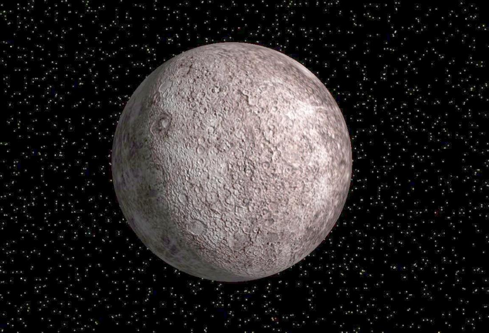

| Меркурий это самая близкая к солну планета. Она наименьшая из планет земной группы. Меркурий был назван в четь древнегреческого бога торговли быстрого Меркурия, так как она движется по небу быстрее других планет. Средняя температура на ней составляет 67°C. |  | Гланвая |